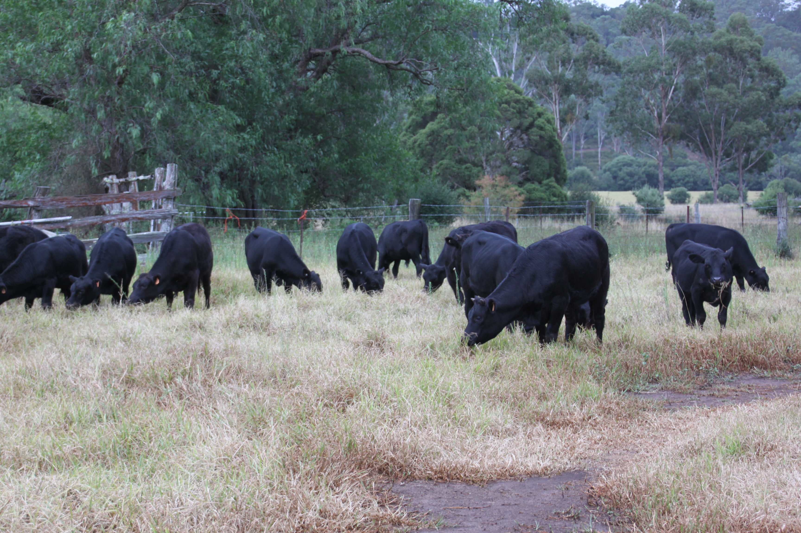
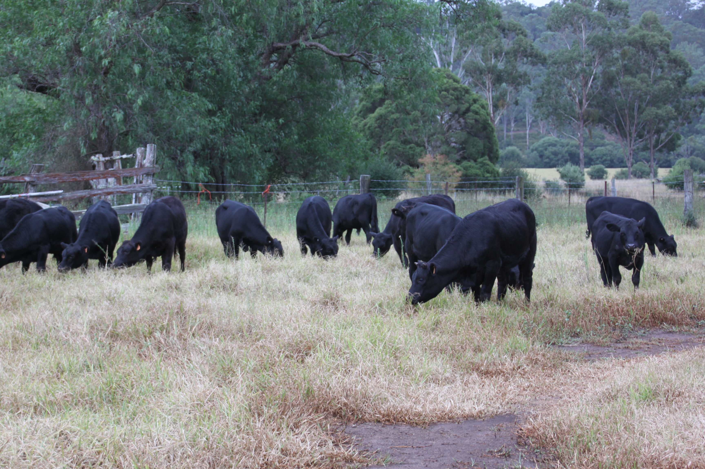
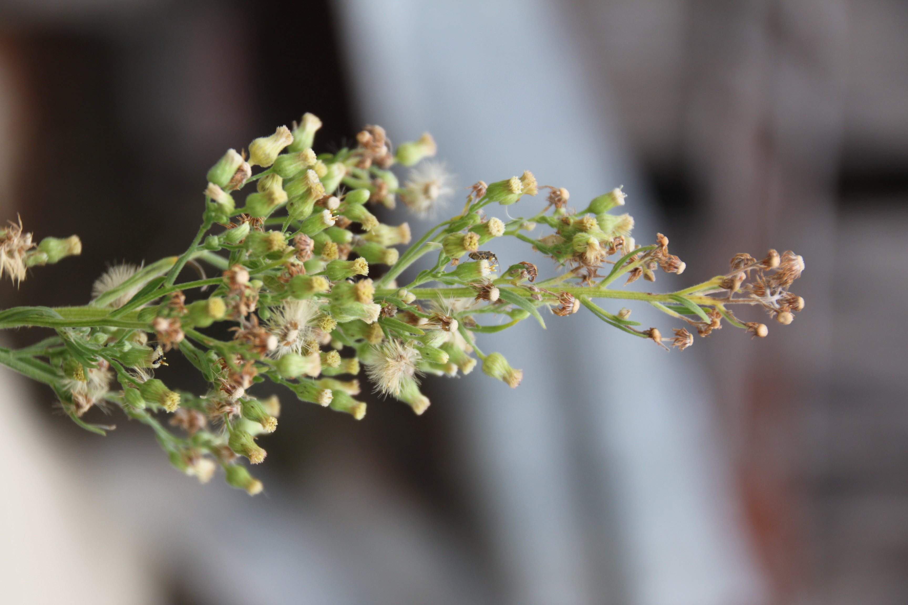
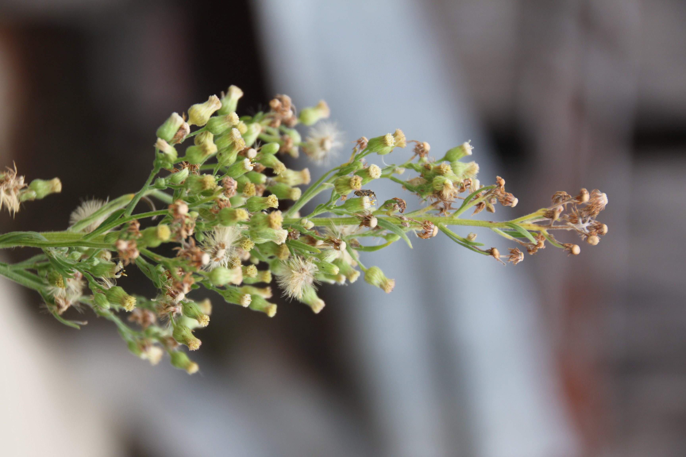

Our Roots
Skyfall Angus began as a dream, rooted in the rolling hills of New South Wales. Established in 2017 in Razorback NSW, Skyfall Angus was born from a strategic shift in focus from commercial operations to performance-driven genetic selection.
 

Our History
Our base of PTIC heifer females and sire originated from Reiland Angus in Gundagai, Southern NSW, alongside other base females acquired through dispersals and sales, including Kyah Park, Allunga, Lawsons, and Trowbridge BBB. Artificial insemination (AI) was introduced in 2020 to accelerate genetic progress, alongside the expansion of our operations to a second property in Camden. In 2022, we purchased a new herd sire, Promised Land Beastmode R289, in partnership with Reiland Angus. R289, the top-priced bull as Lot 1 at the Tandarra Angus bull sale, was purchased for $25,000. His pedigree, featuring the Baldridge Isabel Y69 and KO Moongara bloodlines, made him an excellent addition to our herd. Late in 2023, we expanded once again, acquiring a third property in Goulburn. The varied climate and diverse pasture types have proven beneficial for our older female herd. Today, the Skyfall herd comprises 50 breeding-age females, along with a select group of commercial females. We retain only the top 5% of bulls and our steer progeny is sold directly to consumers in the form of boxed beef. Our genetic selection strategy is laser-focused on breeding functional, industry-relevant females with strong maternal traits and longevity. Matthew, the stud principal, welcomes visitors to inspect the herd by appointment.
Looking Ahead
We believe in more than just raising cattle, we believe in raising standards. Every decision we make is guided by respect: for the environment, for animal welfare, and for the people who enjoy our beef. From paddock to plate, we aim for transparency, traceability, and taste. As we grow, so does our vision. We're embracing digital storytelling, regenerative practices, and community connection. Whether you're a chef, a home cook, or a curious visitor, we invite you to be part of the Skyfall journey.
 
